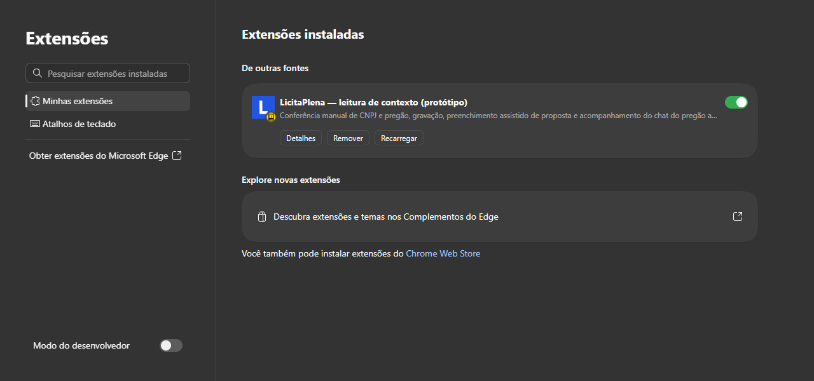

Extensão de leitura do LicitaPlena
Para trazer ao LicitaPlena participantes, marcas e motivos de recusa dos pregões anteriores, a leitura é feita no seu navegador, por você.
Versão de desenvolvedor (0.4.0). A versão da Chrome Web Store vem depois. Por enquanto a extensão é instalada manualmente, como abaixo.
Instalar (uma vez, uns 3 minutos)
- Receba da equipe do LicitaPlena o arquivo
licitaplena-extensao-0.4.0.zipe salve na pasta Documentos. - Clique com o botão direito no arquivo e escolha Extrair tudo… → Extrair. Vai aparecer uma pasta com o mesmo nome. Não apague essa pasta depois: o navegador usa ela.
- No Chrome, digite
chrome://extensionsna barra de endereço e aperte Enter. No Edge, digiteedge://extensions. - Ligue a chave Modo do desenvolvedor (no Chrome fica no canto superior direito; no Edge, na barra da esquerda, embaixo).
- Clique em Carregar sem compactação e escolha a pasta que você extraiu no passo 2 (a que tem o arquivo
manifest.jsondentro). - A extensão aparece na lista, ligada, como na imagem abaixo. Clique no ícone de quebra-cabeça do navegador e no alfinete ao lado de LicitaPlena para deixar o ícone sempre à vista.

Atualizar para uma versão nova: extraia o .zip novo por cima da mesma pasta e clique em Recarregar no cartão da extensão. Deu erro ao carregar? Confira se escolheu a pasta de dentro (a que tem manifest.json), não o arquivo .zip.
Usar em um pregão anterior
- No LicitaPlena, no cartão Licitação anterior, clique no botão para abrir a página do pregão no governo.
- Resolva o captcha na página do governo. Você mesmo resolve; o LicitaPlena nunca faz isso por você.
- Clique no ícone da extensão e em Ler esta página e gravar. O Chrome pede, uma vez, autorização para falar com o LicitaPlena: aceite.
- Volte ao LicitaPlena (aberto e logado em outra aba) e clique Atualizar.
A extensão só lê o que a página já mostrou. Ela não clica, não navega, não envia propostas nem lances e não resolve captcha. Se algo não estiver aberto na tela, ela lista o que você precisa abrir.
Preencher proposta
Para não digitar item por item no cadastro de propostas do Compras.gov, a extensão preenche os campos por você a partir do seu lote no LicitaPlena ou de uma planilha CSV.
- Abra o Compras.gov, entre na página Cadastrar propostas da compra e aceite você mesmo o termo e as declarações Sim/Não.
- Clique no ícone da extensão, em Preencher proposta, e use Buscar lote no LicitaPlena (com o LicitaPlena logado em outra aba) ou escolha a planilha CSV.
- Clique em Preencher esta página. A extensão preenche quantidade, valor, marca e modelo dos itens visíveis.
- Confira cada item e clique Salvar em cada um. Depois vá para a próxima página (o portal pede o captcha, que é seu) e repita o passo 3.
A extensão nunca clica em Salvar, nunca aceita termo ou declarações e nunca resolve captcha. Itens com valor abaixo do seu mínimo, acima do estimado do portal ou com texto maior que o limite do campo ficam em branco e aparecem na lista para você decidir. A extensão lembra o que já preencheu: se o portal cair, reabra a página e clique de novo.
Acompanhar chat do pregão
Avisa quando o pregoeiro escrever no pregão que você já tem aberto no Compras.gov.
- Abra o pregão no Compras.gov (sala do fornecedor logado ou "Acompanhar contratação") e deixe o chat visível.
- Clique no ícone da extensão, em Acompanhar chat, informe o CNPJ da sua empresa (para destacar quando ela for citada) e clique Acompanhar este pregão.
- Quando o pregoeiro escrever, aparece uma notificação com o trecho e a hora, e o ícone mostra um número. Mensagens que citam sua empresa, convocação, anexo, prazo, recusa, desclassificação, inabilitação, diligência, habilitação, suspensão ou aceite vêm destacadas. O som é opcional; as importantes também dão um bipe na própria aba do pregão (funciona mesmo com o som de notificação do Windows desligado, depois que você clicou na página).
Limites. Precisa da aba aberta e do computador ligado (sem a aba, nada é avisado). Se a página recarregar, a extensão volta a acompanhar sozinha. Se o portal deslogar, cair, a aba sair da página ou não der para voltar, ela avisa "parei de acompanhar". Ela só lê o que a própria página mostra: não faz requisições ao portal, não recarrega, não navega e não resolve captcha. Gravar as mensagens no LicitaPlena é opcional e só funciona na página pública "Acompanhar contratação". Ainda não foi testada na sala de disputa real.
Quando a extensão não reconhece a página: enviar diagnóstico
O portal do governo muda de vez em quando. Se a extensão disser que não reconhece a página (ou que não achou o chat, os itens ou os campos), aparece no fim da janela da extensão o botão Enviar diagnóstico.
- Deixe a página do portal aberta e carregada, do jeito que estava.
- Deixe o LicitaPlena aberto e logado em outra aba.
- Clique em Enviar diagnóstico. A equipe recebe só o "esqueleto" da página (nomes de campos, seções e botões) para ajustar a extensão.
O diagnóstico não leva o que você digitou, valores, CPF, nomes de pessoas, nem o texto do chat. Só funciona em páginas do Compras.gov e do ComprasNet, e o servidor do LicitaPlena apaga de novo qualquer coisa parecida com CPF antes de guardar.
Roteiro do primeiro teste real (com a equipe)
Faça num pregão em que você já vai participar. Reserve 30 minutos antes da sessão. A cada passo, se o resultado for diferente do esperado, clique Enviar diagnóstico (quando aparecer) e anote a hora.
- Preparar: LicitaPlena aberto e logado numa aba; o processo do pregão cadastrado com os itens, valores, marca e modelo. Extensão fixada no navegador.
- Cadastro da proposta: no Compras.gov, abra Cadastrar propostas da compra e aceite você mesmo o termo e as declarações Sim/Não. Na extensão: Buscar lote no LicitaPlena → Preencher esta página.
Esperado: os itens da página ficam com quantidade, valor, marca e modelo preenchidos; a extensão lista o que não preencheu e por quê. Confira cada item e clique Salvar você mesmo. Vá para a próxima página (o captcha é seu) e repita. - Sessão de disputa: abra a sala do pregão com o chat visível. Na extensão, em Acompanhar chat, informe o CNPJ da empresa e clique Acompanhar este pregão. Aceite a permissão do portal que o navegador pedir.
Esperado: "Acompanhando esta aba (N mensagens já na tela…)". Se aparecer 0 mensagens com o chat cheio, envie o diagnóstico: é a primeira vez que a extensão vê a sala de disputa de verdade. - Quando o pregoeiro escrever: esperado notificação com trecho e hora e um número no ícone; convocação, anexo, diligência, suspensão, aceite, recusa, habilitação ou o CNPJ da empresa vêm como IMPORTANTE e ficam na tela até você clicar.
- Se o portal pedir para recarregar: recarregue normalmente. Esperado: o ícone mostra "…" e volta para "ON" sozinho. Se o chat fechou com a recarga, vem o aviso "não vejo o chat": abra o chat de novo.
- Depois da sessão: na página pública "Acompanhar contratação" do pregão, abra os itens e fornecedores e clique Ler esta página e gravar. Esperado: "Gravado no LicitaPlena (N propostas…)".
Em nenhum passo a extensão clica em Salvar, aceita termo ou declarações, resolve captcha, envia lance ou troca de página sozinha.